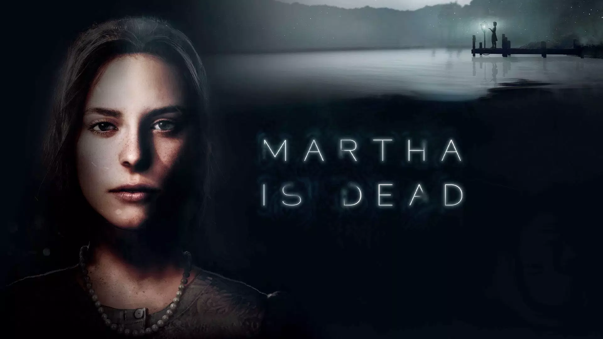
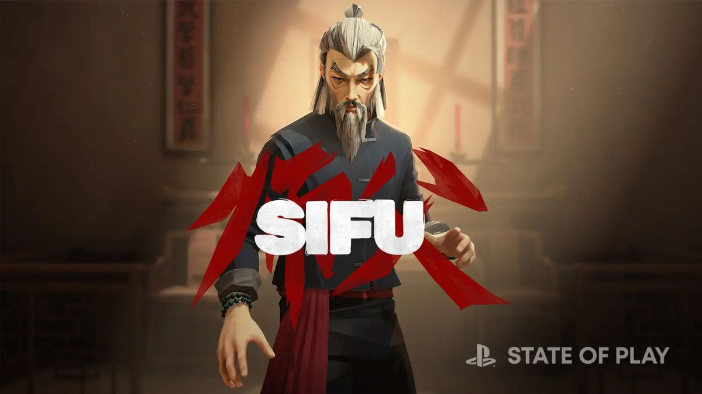
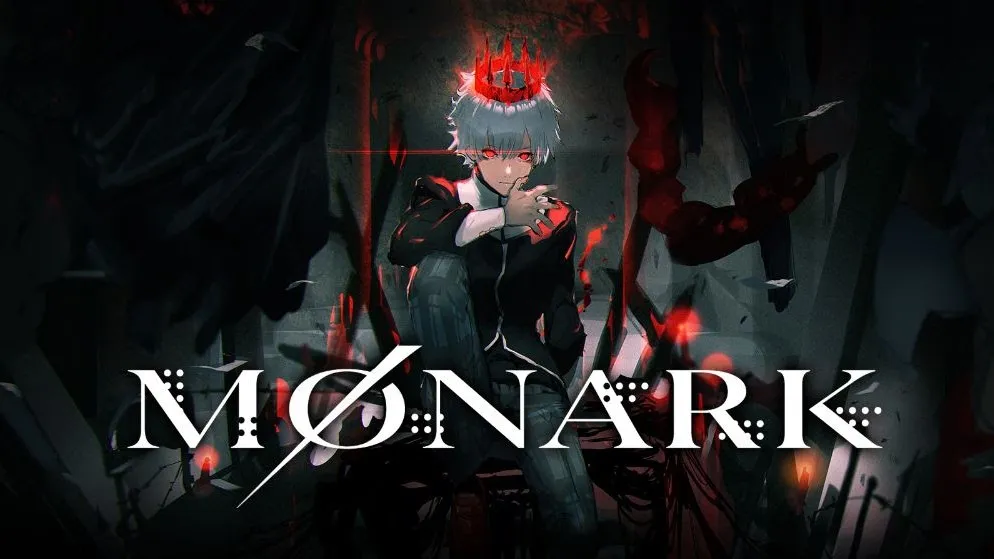

top 1
en el primer lugar del top tenemos el juego martha is dead, de los pocos juegos de terror recientes
que han conseguido darnos esa sensacion de agobio y adrenalina constantes por no saber que es lo que va a
ocurrir. se estrenó el 24 de febrero del 2022.
un juego con una duracion de aproximadamente 6 horas el cual esta dando mucho de que hablar. cuenta con buenas graficas,
buenos escenarios, buena historia. el juego cuenta con un precio de 29,99 euros.

top 2
en segundo lugar tenemos el juego sifu, un yo contra el barrio estilizado pero crudo que muestra combate cuerpo
a cuerpo en un ambiente urbano contemporaneo. sin aliados y con innumerables enemigos. juego que cuenta con una jugabilidad increible
con combates fuera de lo comun y una ambientacion para disfrutar. se estrenó el 6 de febrero del 2022 con un precio de 39,99 euros.

top 3
y en tercer lugar se encuentra el juego monark, un jrpg escolar de los antiguos empleados de atlus. la propuesta es bastante similar
a lo que podemos encontrar en sagas como persona o shin megami tensei, por lo que los seguidores de ambas franquisias
no necesitan mas motivos para estar atentos. será lanzado en consolas como ps4, ps5, nintendo switch y pc. se estima que su fecha de estreno
será el 14 de octubre del 2022, contará con un precio de 74,76 euros.
